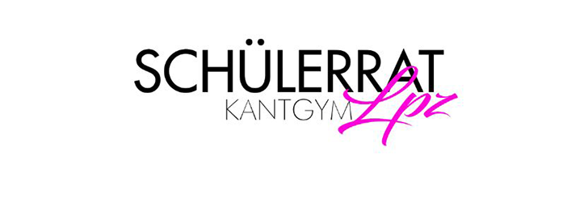

ShS
Nachhilfe von Schüler*innen für Schüler*innen, direkt vor Ort an unserer Schule oder digital von Zuhause.

Schülerrat
Wir lernen Demokratie. Wir nehmen Demokratie wahr. Wir leben Demokratie am KANT! Wir sind der Schülerrat.
Projekte
Der Schulclub soll ein Ort sein, indem Schüler*innen zusammenkommen und ihre Freiräume gestalten.

Schülerzeitung
Hier ist eure Schülerzeitung. Offiziell sind wir nun auch ein Teil dieser ganz besonderen Website und immer für euch erreichbar :) Unsere Artikel werden jetzt auf dieser Website erscheinen.